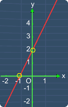
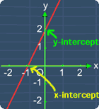

X and Y Intercept
Lesson Objective
This lesson shows what x and y intercepts. Also,
you will see some examples on how to find the
intercepts of linear equations.
About This Lesson
The ideas behind x-intercept and y-intercept are quite simple.
This lesson will show you the important ideas that you must understand about x and y intercepts. Also, you will get to see some examples on find them.
You can proceed by reading the study tips first or watch the math video or try out the practice questions.
This lesson will show you the important ideas that you must understand about x and y intercepts. Also, you will get to see some examples on find them.
You can proceed by reading the study tips first or watch the math video or try out the practice questions.

Tip #1
This lesson involves
solving linear equation. If you need to recall
on how to solve linear equations, you can watch the math videos in:
Tip #2
As you can guess, the x-intercept is
referring to the x-coordinate of the point where
the graph
crosses the
x-axis.
Similarly, the y-intercept is referring to the
y-coordinate of the point where the graph crosses the y-axis.
Similarly, the y-intercept is referring to the
y-coordinate of the point where the graph crosses the y-axis.

Math Video Transcript
Multiple Choice Questions (MCQ)
Now, let's try some MCQ questions to understand
this lesson better.
You can start by going through the series of questions on x and y intercept or pick your choice of question below.
You can start by going through the series of questions on x and y intercept or pick your choice of question below.
- Question 1 on finding x and y intercepts.
- Question 2 on finding x and y intercepts for a quadratic graph